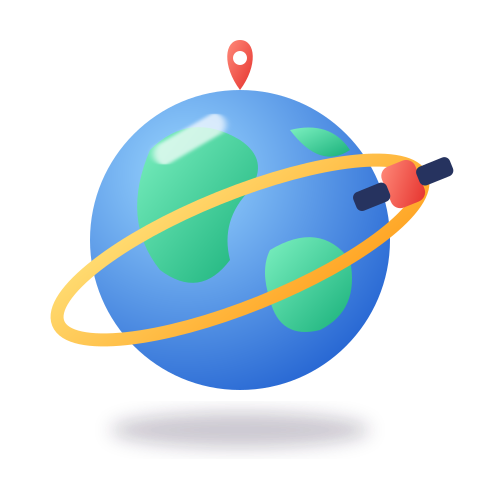

Aula Geovisor · lección 1
El geovisor es el núcleo de la información
Una base de datos te dice qué. Un geovisor te dice dónde, qué hay al lado y qué pasa si cambias algo. Por eso todo dato territorial termina en un visor.

1 · Del dato a la decisión
Todos los caminos pasan por el visor
Toca cada etapa. Verás qué ocurre y qué pregunta se responde ahí.
2 · Sin visor / con visor
Una fila no te dice dónde
Elige un municipio. A la izquierda, sus datos como tabla. A la derecha, el mismo territorio en un mapa. ¿Cuál te cuenta más en un vistazo?
3 · Geovisores que debes conocer
Cuatro visores, cuatro preguntas
Cada entidad publica su propio visor. Aprende para qué sirve cada uno y abre el real cuando termines de practicar.
4 · Anatomía de un geovisor
Seis piezas que se repiten en todos
Aprende a reconocerlas y podrás usar cualquier visor, aunque nunca lo hayas visto.
›
+
−
4.6097° N · 74.0817° WEPSG:9377 · 1:250.000
5 · Comprueba lo aprendido
Tres preguntas rápidas
Ahora hazlo con tu municipio
Recibe tu territorio, descarga sus capas y practica el recorrido clic a clic.
Entrar al Modo AulaTutorial Colombia en Mapas